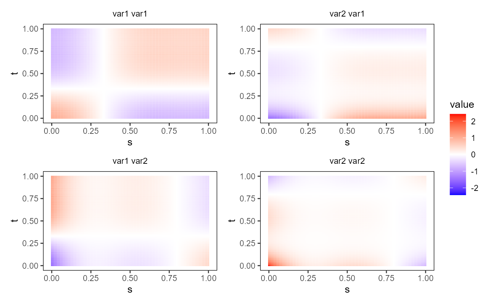

Plot an object of class bifd using
ggplot2 and geom_tile.
The object must contain only one single functional replication.
plot_bifd(bifd_obj, type_plot = "raster", phi = 40, theta = 40)A bivariate functional data object of class bifd, containing one single replication.
a character value If "raster", it plots the bivariate functional data object as a raster image. If "contour", it produces a contour plot. If "perspective", it produces a perspective plot. Default value is "raster".
If type_plot=="perspective", it is the phi argument
of the function plot3D::persp3D.
If type_plot=="perspective", it is the theta argument
of the function plot3D::persp3D.
A ggplot with a geom_tile layer providing a plot of the bivariate functional data object as a heat map.
library(funcharts)
mfdobj <- data_sim_mfd(nobs = 1)
tp <- tensor_product_mfd(mfdobj)
plot_bifd(tp)
